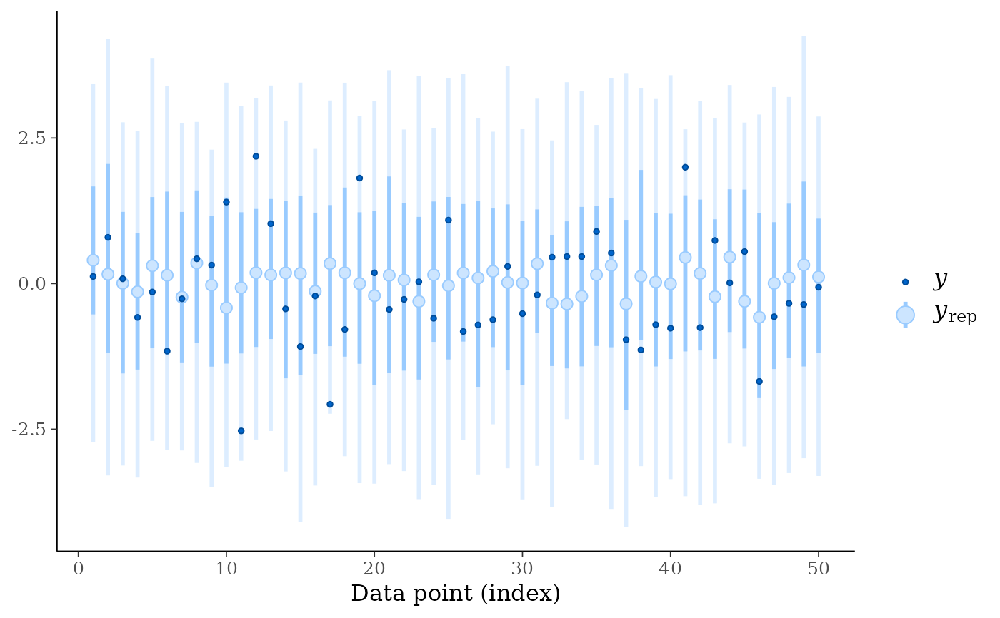
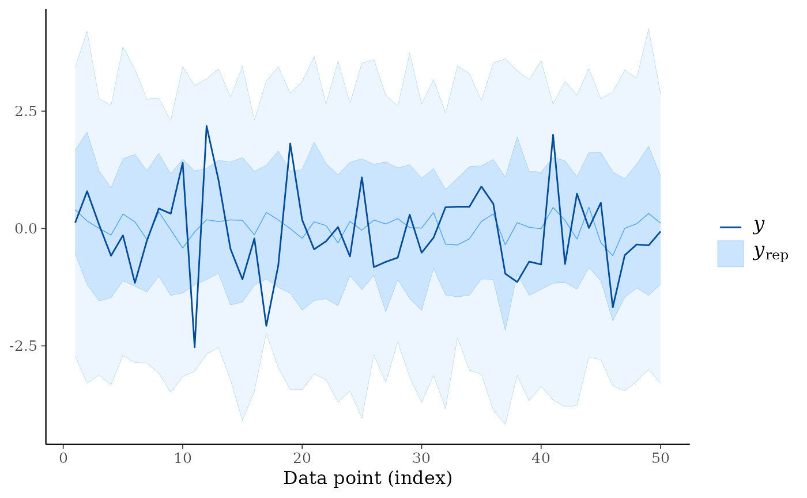
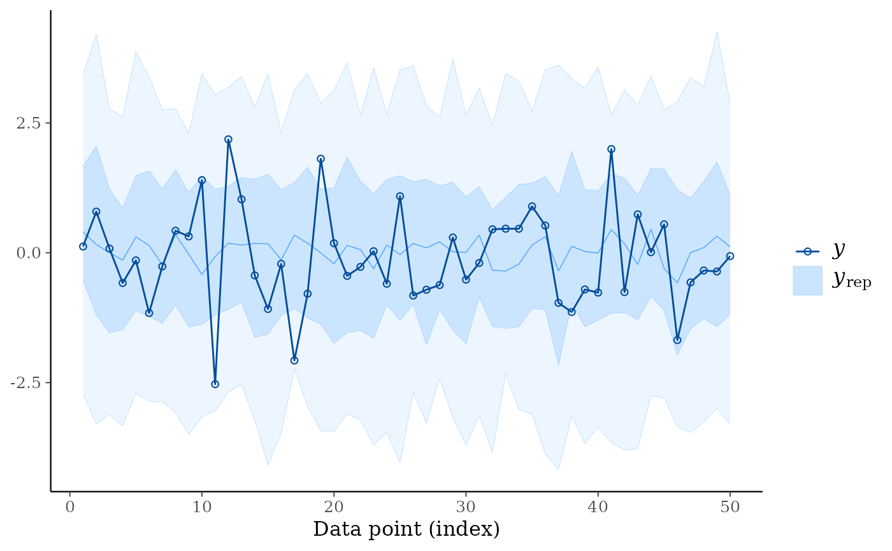
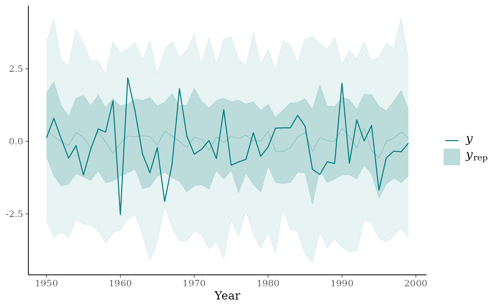
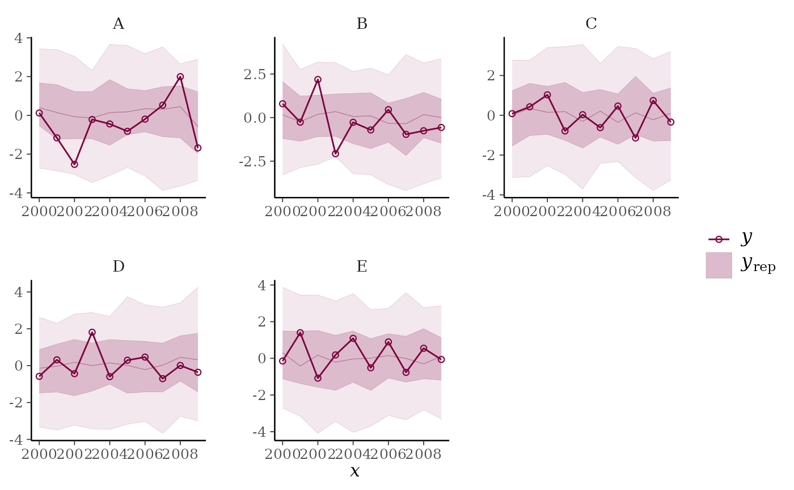
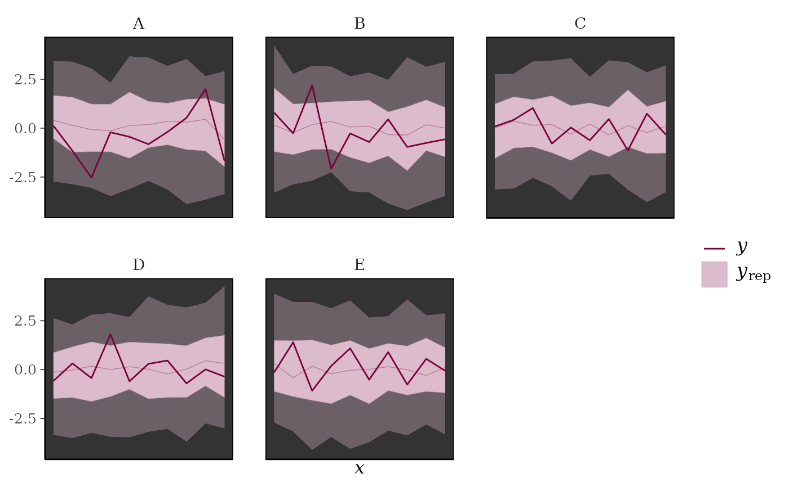
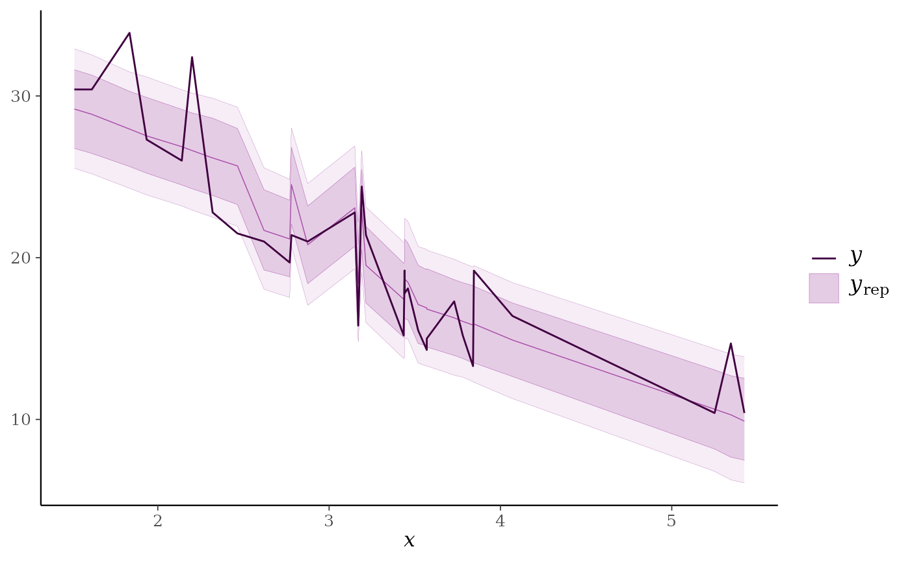
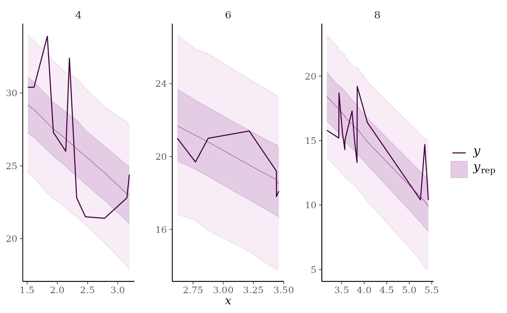
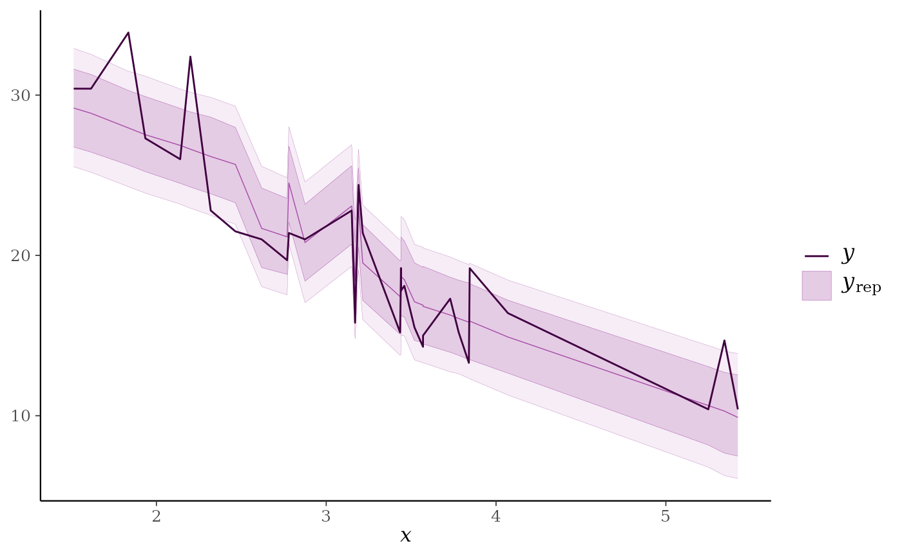
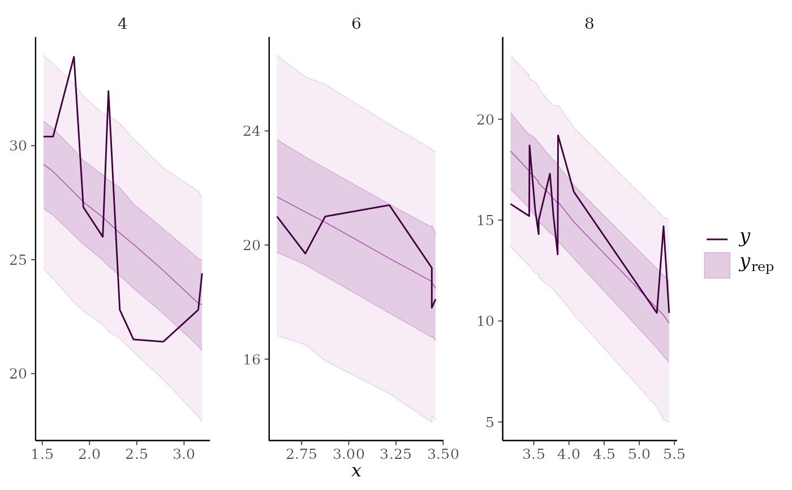

Medians and central interval estimates of yrep with y overlaid.
See the Plot Descriptions section, below.
Usage
ppc_intervals(
y,
yrep,
x = NULL,
...,
prob = 0.5,
prob_outer = 0.9,
alpha = 0.33,
size = 1,
fatten = 2.5,
linewidth = 1
)
ppc_intervals_grouped(
y,
yrep,
x = NULL,
group,
...,
facet_args = list(),
prob = 0.5,
prob_outer = 0.9,
alpha = 0.33,
size = 1,
fatten = 2.5,
linewidth = 1
)
ppc_ribbon(
y,
yrep,
x = NULL,
...,
prob = 0.5,
prob_outer = 0.9,
alpha = 0.33,
size = 0.25,
y_draw = c("line", "points", "both")
)
ppc_ribbon_grouped(
y,
yrep,
x = NULL,
group,
...,
facet_args = list(),
prob = 0.5,
prob_outer = 0.9,
alpha = 0.33,
size = 0.25,
y_draw = c("line", "points", "both")
)
ppc_intervals_data(
y,
yrep,
x = NULL,
group = NULL,
...,
prob = 0.5,
prob_outer = 0.9
)
ppc_ribbon_data(
y,
yrep,
x = NULL,
group = NULL,
...,
prob = 0.5,
prob_outer = 0.9
)Arguments
- y
A vector of observations. See Details.
- yrep
An
SbyNmatrix of draws from the posterior (or prior) predictive distribution. The number of rows,S, is the size of the posterior (or prior) sample used to generateyrep. The number of columns,Nis the number of predicted observations (length(y)). The columns ofyrepshould be in the same order as the data points inyfor the plots to make sense. See the Details and Plot Descriptions sections for additional advice specific to particular plots.- x
A numeric vector to use as the x-axis variable. For example,
xcould be a predictor variable from a regression model, a time variable for time-series models, etc. Ifxis missing orNULLthen the observation index is used for the x-axis.- ...
Currently unused.
- prob, prob_outer
Values between
0and1indicating the desired probability mass to include in the inner and outer intervals. The defaults areprob=0.5andprob_outer=0.9.- alpha, size, fatten, linewidth
Arguments passed to geoms. For ribbon plots
alphais passed toggplot2::geom_ribbon()to control the opacity of the outer ribbon andsizeis passed toggplot2::geom_line()to control the size of the line representing the median prediction (size=0will remove the line). For interval plotsalpha,size,fatten, andlinewidthare passed toggplot2::geom_pointrange()(fatten=0will remove the point estimates).- group
A grouping variable of the same length as
y. Will be coerced to factor if not already a factor. Each value ingroupis interpreted as the group level pertaining to the corresponding observation.- facet_args
A named list of arguments (other than
facets) passed toggplot2::facet_wrap()orggplot2::facet_grid()to control faceting. Note: ifscalesis not included infacet_argsthen bayesplot may usescales="free"as the default (depending on the plot) instead of the ggplot2 default ofscales="fixed".- y_draw
For ribbon plots only, a string specifying how to draw
y. Can be"line"(the default),"points", or"both".
Value
The plotting functions return a ggplot object that can be further
customized using the ggplot2 package. The functions with suffix
_data() return the data that would have been drawn by the plotting
function.
Plot Descriptions
ppc_intervals(), ppc_ribbon()100*prob% central intervals foryrepat eachxvalue.ppc_intervals()plots intervals as vertical bars with points indicatingyrepmedians and darker points indicating observedyvalues.ppc_ribbon()plots a ribbon of connected intervals with a line through the median ofyrepand a darker line connecting observedyvalues. In both cases an optionalxvariable can also be specified for the x-axis variable.Depending on the number of observations and the variability in the predictions at different values of
x, one of these plots may be easier to read than the other.ppc_intervals_grouped(), ppc_ribbon_grouped()Same as
ppc_intervals()andppc_ribbon(), respectively, but a separate plot (facet) is generated for each level of a grouping variable.
References
Gabry, J. , Simpson, D. , Vehtari, A. , Betancourt, M. and Gelman, A. (2019), Visualization in Bayesian workflow. J. R. Stat. Soc. A, 182: 389-402. doi:10.1111/rssa.12378. (journal version, arXiv preprint, code on GitHub)
Gelman, A., Carlin, J. B., Stern, H. S., Dunson, D. B., Vehtari, A., and Rubin, D. B. (2013). Bayesian Data Analysis. Chapman & Hall/CRC Press, London, third edition. (Ch. 6)
Examples
y <- rnorm(50)
yrep <- matrix(rnorm(5000, 0, 2), ncol = 50)
color_scheme_set("brightblue")
ppc_intervals(y, yrep)

ppc_ribbon(y, yrep)

ppc_ribbon(y, yrep, y_draw = "points")
# \dontrun{
ppc_ribbon(y, yrep, y_draw = "both")

# }
ppc_intervals(y, yrep, size = 1.5, fatten = 0) # remove the yrep point estimates
color_scheme_set("teal")
year <- 1950:1999
ppc_intervals(y, yrep, x = year, fatten = 1) + ggplot2::xlab("Year")
ppc_ribbon(y, yrep, x = year) + ggplot2::xlab("Year")

color_scheme_set("pink")
year <- rep(2000:2009, each = 5)
group <- gl(5, 1, length = 50, labels = LETTERS[1:5])
ppc_ribbon_grouped(y, yrep, x = year, group, y_draw = "both") +
ggplot2::scale_x_continuous(breaks = pretty)

ppc_ribbon_grouped(y, yrep, x = year, group,
facet_args = list(scales = "fixed")) +
xaxis_text(FALSE) +
xaxis_ticks(FALSE) +
panel_bg(fill = "gray20")

# get the data frames used to make the ggplots
ppc_dat <- ppc_intervals_data(y, yrep, x = year, prob = 0.5)
ppc_group_dat <- ppc_intervals_data(y, yrep, x = year, group = group, prob = 0.5)
# \dontrun{
library("rstanarm")
fit <- stan_glmer(mpg ~ wt + (1|cyl), data = mtcars, refresh = 0)
yrep <- posterior_predict(fit)
color_scheme_set("purple")
ppc_intervals(y = mtcars$mpg, yrep = yrep, x = mtcars$wt, prob = 0.8) +
panel_bg(fill="gray90", color = NA) +
grid_lines(color = "white")
 ppc_ribbon(y = mtcars$mpg, yrep = yrep, x = mtcars$wt,
prob = 0.6, prob_outer = 0.8)

ppc_ribbon_grouped(y = mtcars$mpg, yrep = yrep, x = mtcars$wt,
group = mtcars$cyl)

color_scheme_set("gray")
ppc_intervals(mtcars$mpg, yrep, prob = 0.5) +
ggplot2::scale_x_continuous(
labels = rownames(mtcars),
breaks = 1:nrow(mtcars)
) +
xaxis_text(angle = -70, vjust = 1, hjust = 0) +
xaxis_title(FALSE)
# }
ppc_ribbon(y = mtcars$mpg, yrep = yrep, x = mtcars$wt,
prob = 0.6, prob_outer = 0.8)

ppc_ribbon_grouped(y = mtcars$mpg, yrep = yrep, x = mtcars$wt,
group = mtcars$cyl)

color_scheme_set("gray")
ppc_intervals(mtcars$mpg, yrep, prob = 0.5) +
ggplot2::scale_x_continuous(
labels = rownames(mtcars),
breaks = 1:nrow(mtcars)
) +
xaxis_text(angle = -70, vjust = 1, hjust = 0) +
xaxis_title(FALSE)
# }